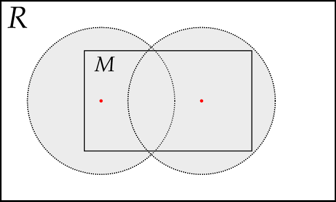

Chapter 3 - Topological Spaces
3.11 Compactness in Metric Spaces
| Main: | Index |
| Previous: | 3.10 Compactness |
| Next: | 3.12 Real Functions on Metric and Topological Spaces |
Results
Definition 1
Let $R = (X, \rho)$ be a metric space and $\eps$ any positive number. Then a set $A\subset R$ is said to be an $\eps$-net for a set $M\subset R$ if, for every $x\in M$, there is at least one point $a\in A$ such that $\rho(x, a)\leq\eps$.
Illustration. The two red points make the set $A$ which is an $\eps$-net for $M$, since every point in $M$ is within $\eps$ of $A$.

Another illustration. The red points form part of an $\eps$-net for the Euclidean plane, where $\eps$ is the radius of the large yellow disks. The blue disks of half the radius are disjoint, and the yellow disks together cover the whole plane, satisfying the two definitional requirements on an $\eps$-net.

Definition 2
Given a metric space $R$ and a subset $M\subset R$, suppose $M$ has a finite $\eps$-net for every $\eps > 0$. Then $M$ is said to be totally bounded.
Theorem 1
Every countably compact metric space $R$ is totally bounded.
Corollary 1
Every countably compact metric space has a countable everywhere dense subset and a countable base.
Corollary 2
Every countably compact metric space is compact.
Theorem 2
A metric space $R$ is compact if and only if it is totally bounded and complete.
Theorem 3
A subset $M$ of a complete metric space $R$ is relatively compact if and only if it is totally bounded.
So any bounded subset of Euclidean $n$-space is totally bounded and hence relatively compact. This is a version of the Bolzano-Weierstrass theorem. This form can be useful since it is usually easier to prove that a set is totally bounded than to prove that it is relative compact. But it is the compactness that is the key property.
Definition 3
A family $\Phi$ of functions $\phi$ defined on a closed interval $[a, b]$ is said to be uniformly bounded if there exists a number $K > 0$ such that, $$ |\phi(x)| < K $$ for all $x\in[a,b]$ and all $\phi\in\Phi$.
Definition 4
A family $\Phi$ of functions $\phi$ defined on a closed interval $[a, b]$ is said to be equicontinuous if, given any $\eps > 0$, there exists a number $\delta > 0$ such that $|x' - x''| < \delta$ implies $$ |\phi(x') - \phi(x'')| < \eps $$ for all $x',x''\in[a,b]$ and all $\phi\in\Phi$.
Theorem 4 (Arzelà)
A necessary and sufficient condition for a family $\Phi$ of continuous functions $\phi$ defined on a closed interval $[a, b]$ to be relatively compact in $C_{[a,b]}$ is that $\Phi$ be uniformly bounded and equicontinuous.
Theorem 5 (Peano)
Let $f(x, y)$ be defined and continuous on a plane domain $G$. Then at least one integral curve of the differential equation $$ \frac{dy}{dx} = f(x, y) $$ passes through each point $(x_0, y_0)$ of $G$.
Problem 1
Let $M$ be a totally bounded subset of a metric space $R$. Prove that the $\eps/2$-nets figuring in the definition of total boundedness of $M$ can always be chosen to consist of points of $M$ rather than of $R$. (Fixed some errata reported on this exercise).Hint: Given an $\eps/2$-net for $M$ consisting of points $a_1, a_2, \ldots, a_n\in R$, all within $\eps/2$ of some point of $M$, replace each point $a_k$ with a point $b_k\in M$ sich that $\rho(a_k, b_k) < \eps/2$, then $\{b_k\}\subset M$ is an $\eps$-net for $M$.
Proof.
For any point $x\in M$ such that $\rho(x, a_k)\leq \eps/2$, we select new points $b_k\in M$ such that $\rho(a_k, b_k) \leq \eps/2$. Then, by the triangle inequality: $$ \rho(x, b_k) \leq \rho(x, a_k) + \rho(a_k, b_k) \leq \frac{\eps}{2} + \frac{\eps}{2} = \eps, $$ which shows that the points $\{b_k\}$ make an $\eps$-net for $M$.
■
Problem 2
Prove that every totally bounded metric space is separable. (Separable: a metric space has a countable everywhere dense subset).Hint: Construct a finite $(1/n)$-net for every $n\in\N$, then take the union of these nets.
Proof.
Suppose $R$ is a totally bounded metric space. Since it is totally bounded, there exists a finite $\eps$-net for all $\eps > 0$. Following the hint we define an $1/n$-net for $n\in\N$. Each $A_n$ are the points in the $1/n$-net. $$ A_1 = \{a_1,\ldots,a_{k_1}\} $$ $$ A_2 = \{a_{k_1 + 1},\ldots,a_{k_2}\} $$ $$ \vdots $$ $$ A_{n+1} = \{a_{k_n + 1},\ldots,a_{k_{n+1}}\} $$ $$ \vdots $$ Define $Z = \bigcup_{n\in\N}A_n$, the union of all points in all the $\eps$-nets. As a countable union of finite sets, $Z$ is countable. To show that $Z$ is everywhere dense in $R$, we must show that $[Z] = R$.
$\subset$) Since $[Z]$ is the intersection of all closed sets containing it, and $R$ is a closed set that contains $[Z]$, it follows that $[Z]\subset R$.
$\supset$) To show that $R\subset[Z]$, we instead show the contrapositive; $x\not\in [Z] \Rightarrow x\not\in R$. So assume that $x\not\in[Z]$. Then for any $\eps > 0$ and any $a_m\in[Z]$, then $\rho(x, a_m) > \eps$, but then $x$ is outside the $\eps$-net and so $x\not\in R$ since $R$ is totally bounded. We can conclude that $R\subset[Z]$.
This shows that $[Z]=R$, and since $Z$ is countable, it is a countable everywhere dense subset of $R$, so $R$ is separable.
■
Problem 3
Let $M$ be a bounded subset of the space $C_{[a,b]}$. Prove that the set of all functions $$ F(x) = \int_a^x f(t)dt $$ with $f\in M$ is relatively compact. (Added 'relatively' according to errata list).Proof.
Note, from Example 4 on page 57, $C_{[a,b]}$ is a complete metric space. Define $$ K = \left\{ F\,\mid\, F(x) = \int_a^x f(t)dt,\;f\in M\right\}. $$ Not showing the details, but since $f$ is continuous, then so is the integral $F$ and so $F\in C_{[a,b]}$ and therefore $K\subset C_{[a,b]}$, i.e. it is a subset of a complete metric space. In order to verify that $K$ is relatively compact, we must show that it is totally bounded, which means we need to show that $K$ has a finite $\eps$-net. After that, we can apply Theorem 3.
■
Problem 4
Given two metric compacta (compact Hausdorff) $X$ and $Y$, let $C_{XY}$ be the set of all continuous mappings of $X$ into $Y$. Let distance be defined in $C_{XY}$ by the formula $$ \rho(f, g) = \sup_{x\in X}d(f(x), g(x)). \tag{4} $$ where $d$ is the metric in $Y$. Prove that $C_{XY}$ is a metric space. Let $M_{XY}$ be the set of all mappings of $X$ into $Y$, with the same metric (4). Prove that $C_{XY}$ is closed in $M_{XY}$.Proof.
Showing that $C_{XY}$ is a metric space, i.e. that $\rho$ satisfies the three conditions of a metric.
(1) Only 0 when objects are equal. $\rho(f, g) = 0 \Leftrightarrow f = g$.
$\Rightarrow$) Assume that $\rho(f, g) = 0$. \begin{align} \rho(f, g) = 0 &\Longrightarrow 0\leq \sup_{x\in X}d(f(x), g(x)) = 0 \\ &\Longrightarrow f(x) = g(x) \end{align} which follows since $d$ is a metric.
$\Leftarrow$) Set $g = f$. $$ \rho(f, f) = \sup_{x\in X}d(f(x), f(x)) = 0 $$ which follows since $d$ is a metric.
(2) Symmetric property. $$ \rho(f, g) = \sup_{x\in X}d(f(x), g(x)) = \sup_{x\in X}d(g(x), f(x)) = \rho(g, f) $$ which follows since $d$ is a metric.
(3) Triangle inequality. $$ \rho(f, g) = \sup_{x\in X}d(f(x), g(x)) \leq \sup_{x\in X}d(f(x), h(x)) + \sup_{x\in X}d(h(x), g(x)) = \rho(f, h) + \rho(h, g) $$ So, since $d$ is a metric we have verfied: $$ \rho(f, g) \leq \rho(f, h) + \rho(h, g). $$ All properties are verified, so $C_{XY}$ is a metric space.
Next we show that $C_{XY}$ is closed in $M_{XY}$. This can be verified by showing that any limit point of $C_{XY}$ must be in $C_{XY}$, which will prove that $C_{XY} = [C_{XY}]$, i.e. that it is closed. So assume $f$ is a limit point of $C_{XY}$, i.e. $f\in[C_{XY}]$ and that there is a sequence $\{f_n\}$ such that $f_n\rightarrow f$ as $n\rightarrow\infty$. From the results from Problem 1, section 2.7, we know that the limit of a sequence of continuous functions $f_n$ is itself continuous, so $f\in C_{XY}$. Therefore $[C_{XY}]\subset C_{XY}$. Since $C_{XY}\subset [C_{XY}]$ we conclude that $C_{XY} = [C_{XY}]$, i.e. that it is closed.
■
Problem 5
asdProof.
■